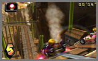

About The Game
Mario Kart Wii is a racing game developed by Nintendo Entertainment Analysis and Development and published by Nintendo for the Wii console. It is the sixth installment in the Mario Kart series (excluding the two arcade games) and the second Mario Kart title to use the Nintendo Wi-Fi Connection. The game was released worldwide throughout April 2008. Every copy of the game is packaged with the Wii Wheel accessory, which is designed to house the Wii Remote to allow more intuitive and conventional steering.
Changes from its predecessor, Mario Kart DS, include motorbikes and support for up to twelve racers online. Like other games in the Mario Kart series, it involves various characters from several Mario games racing each other on tracks themed from locations in the Mario series. Support for the Nintendo Wi-Fi Connection allows racing against other players from around the world, and online competitions and results are available by installing the Mario Kart Channel to the Wii Menu.
Mario Kart Wii was first shown at E3 2007. It has been positively received by critics; while not revolutionary, the online capability and the large number of tracks, characters and karts has been praised. The game had a commercially successful launch in every region, and sold over a million copies in both Japan and the United States in less than a month.
Screenshot
- 